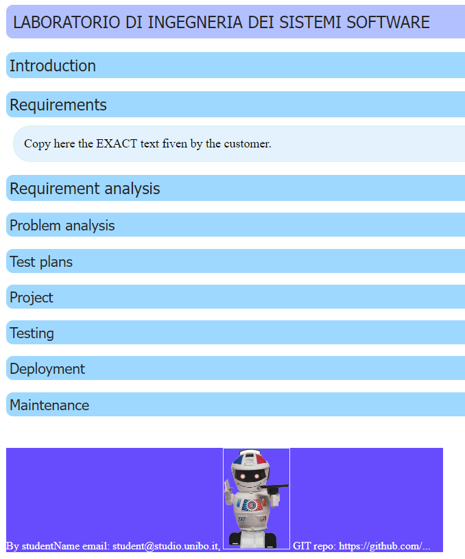

Il template¶
|  | Il templateToFill costituisce lo strumento che useremo per rendere esplcite le conoscenze, le decisioni e i modelli introdotte nelle fasi di analisi e di progetto. Questo documento:
Occorre ripensare al ruolo delle documentazione e alle metodologie più adeguate per realizzarla in modo utile, costruttivo e sistematicamente correlato allo stato corrente del codice. |
{kind=link}
Anticipiamo qui alcuni aspetti che svilupperemo in modo più approfondito lungo tutto il corso.
Requisiti¶
Riportiamo qui (il link a) il documento dei reqisiti redatto dal committente (ad esempio) TemaFinale23.html ->) SENZA ALCUNA MODIFCA.
L’analisi dei requisiti¶
L’analisi dei requisiti mira a:
Occorre fare una analisi del testo che precisi in modo non ambiguo il significato dei termini usati e le informazioni non esplicitamente espresse. La costruzione di un dizionario in linguaggio naturale è utile ma non risolutiva, in quanto esprime informazione ancora affetta da ambiguità se non da incoeranza e inconsistenza.
Dunque, le informazioni date in linguaggio naturale servono solo in una fase preliminare dei lavori. Occorre esprimere le informazioni in modo ‘formale’, cioè in modo comprensible alla macchina.
A tal fine sono utili i linguaggi che permettono di definire Modelli capaci di catturare gli aspetti essenziali, lasciando sullo sfondo dettagli anche importanti, ma non rilevanti nelle prime fasi.
Gli Use Cases Diagrams -> utilizzati in UML -> e le più recenti User Stories -> possono essere utili come linea-guida per definire una o più TestUnits funzionali. Le specifiche degli Use Cases espresse in linguaggio naturali possono essere inserite come commenti in tali TestUnits.
Le domande da porre al committente mirano a chiarire:
la natura delle entità, cioè se dal punto di vista software, una entità è (modellabile come un) oggetto (POJO), un servizio, un processo, un attore, etc.
se le varie entità devono essere distribuite su diversi nodi computazionali
i vincoli tecnologici, cioè se il committente propone già qualche specifica tecnologia o qualche specifico supporto per una data entità
le interazioni (a procedure-call, a messaggi, sincrone, asincrone) tra le diverse entità
L’analisi del problema¶
L’analisi del problema mira a:
L’analisi del problema NON IMPLICA ancora alcuna progettazione, ma mira a fornire un quadro delle possibili soluzioni tecnologighe individuando quelle più utili per il superamento delle problematiche poste dai requisiti. La scelta finale sarà fatta dal progettista (che potrebbe anche ampliare lo spettro della indagine - ricordiamo che siamo in un processo di Progettazione e sviluppo evolutivo).
L’analisi del problema serve per capire quali sono le maggiori problematiche da affrontare, le tecnologie da usare e le risorse (umane e temporali) necessarie. Inoltre gettano le basi per impostare il primo SPRINT di sviluppo e quindi per costruire un primo ‘prototipo’ funzionante del sistema da estendere poi in modo incrementale con gli SPRINT succesivi dopo una opportuna SPRINT-review con il committente
Al termine della analisi dei requisiti e del problema dovrebbe essere definito un modello del sistema che mette in luce i macro-componenti e le loro interazioni, cioè una prima architettura logica del sistema.
L’architettura logica¶
Il risultato della analisi può essere sintetizzato nella definizione di una architettura logica che definisce la NATURA (oggetti, processi, servizi, attori, database, etc.) dei MACRO-COMPONENTI del sistema e della loro interazione, NON COME SOLUZIONE DI PROGETTO, ma come VINCOLI IMPLICATI dal problema.
Il risultato della analisi del problema dovrebbe essere (del tutto) condiviso
Da questa architettura dovrebbe anche scaturire la valutazione dell’Abstraction gap rispetto alle tecnologie disponibili (librerie, frameworks, piattaforme, etc.)
L’analista potrebbe/dovrebbe dare uno sguardo complessivo al problema, cercando anche di organizzare tutte le funzionalità per importanza, e come queste funzionalità debbano essere distribuite tra i vari MACRO-componenti.
Progettazione e sviluppo evolutivo¶
L’uso dei modelli è utile (per non dire indispensabile) PER CONCENTRARE l’attenzione SUGLI ASPETTI RITENUTI SALIENTI (tenendo conto anche dei tempi, delle tecnologie disponibili e dei costi).
Come già previsto da UML ->, è opportuno definire modelli come risultato delle fasi di analisi dei requisiti (Use Case Diagrams), analisi del problema e del progetto (class diagrams, sequence diagrams, activity diagrams, statechart diagram ) e anche per la distribuzione del prodotto (deployment diagrams).
L’architettura logica espressa mediante un modello esguibile del sistema da realizzare, condiviso tra tutti (customer, responsabili aziendali, sviluppatori), è un importante e solido punto di partenza per la progettazione della soluzione, cioè per il passaggio da COSA a COME (si veda Il cosa e il come).
il passaggio da WHAT a HOW può essere visto e svolto come un processo evolutivo di trasformazione/specializzazione dell’architettura logica di base.
Il modello della architettura logica può essere anche il riferimento per la impostazione di PIANI di testing espressi in MODO NON discorsivo (formale), comprensibile a una macchina.
Linee guida¶
Alcune utleriori linee-guida sono riportate in Come organizzare gli sprint